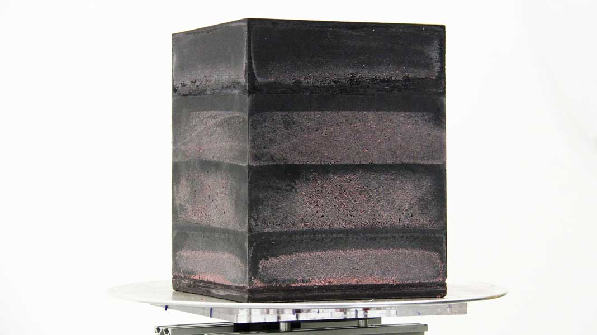
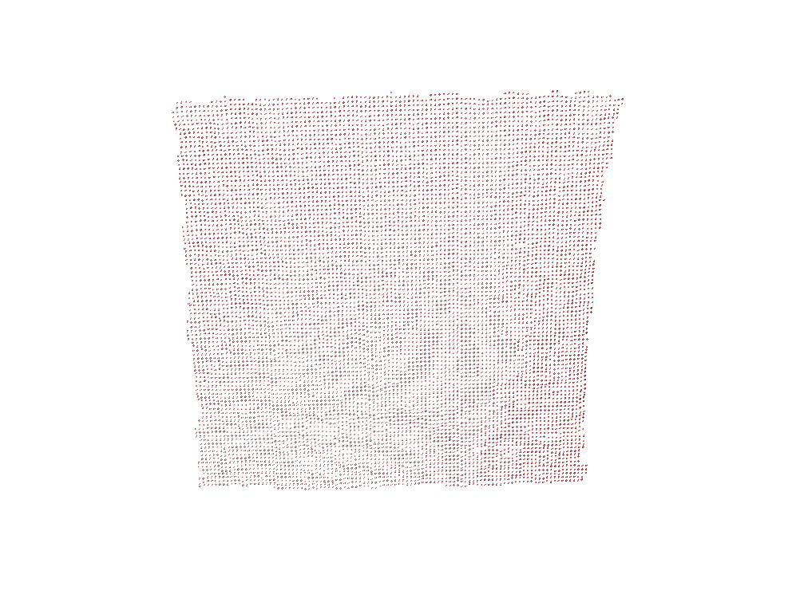
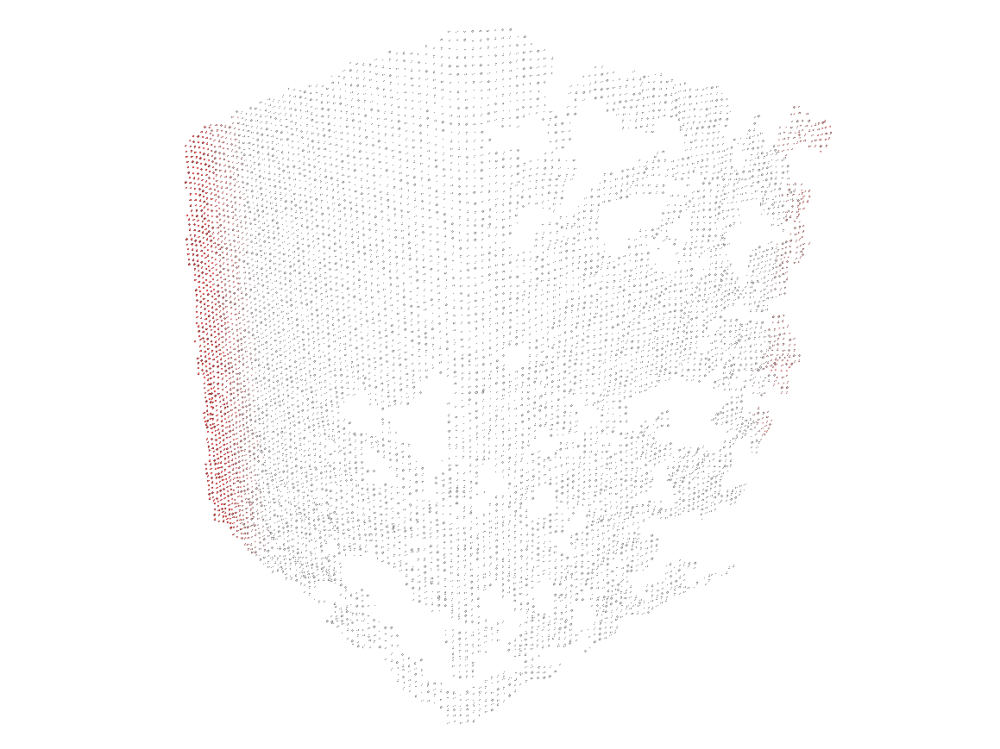
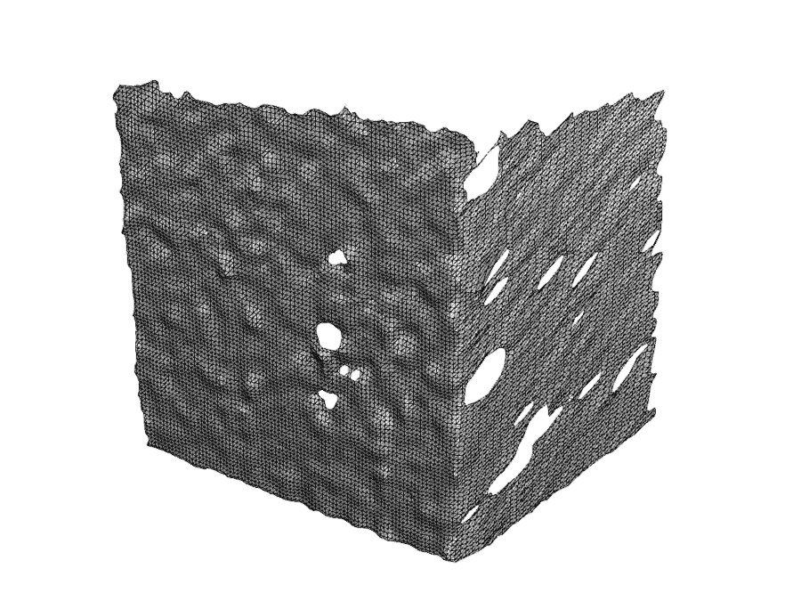
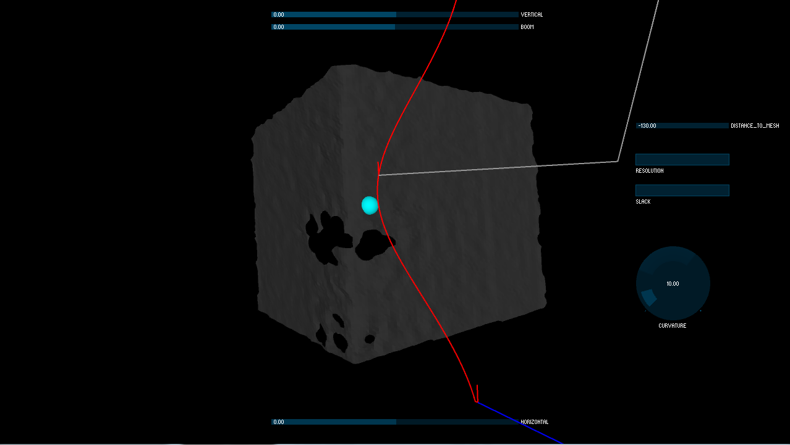
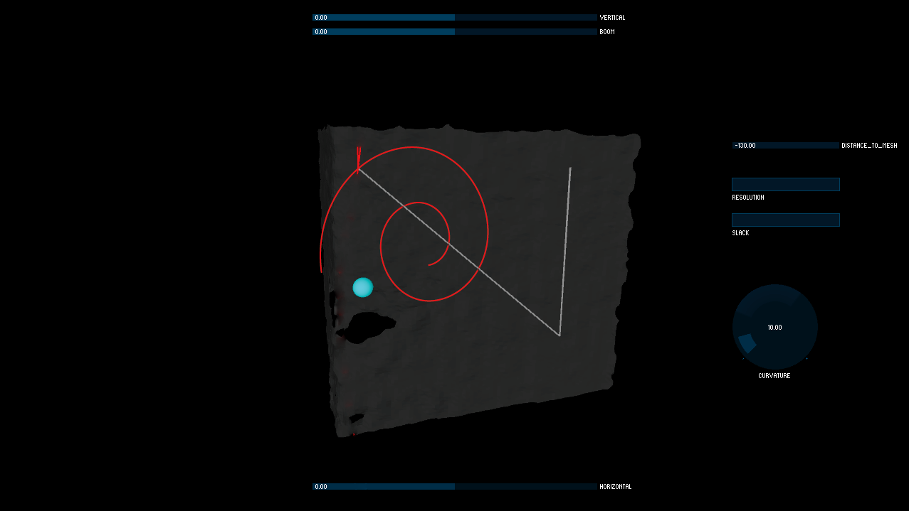
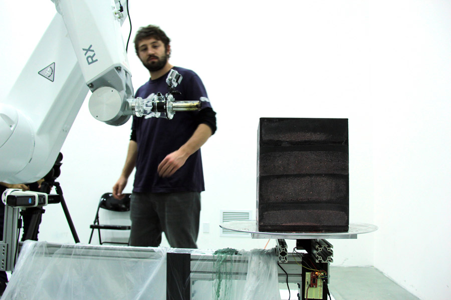

VOIDING
Two initial behaviors recognize the corner conditions of flat side of the cube and build a tool path melting away the wax cube. As the cube gets more melted it is becoming harder to definitely distinguish a corner and a flat.
Initial material condition: wax cube 12"x12"18"

The spiral tool path getting revealed on the flat surface of the cube.
Raw point cloud of flat cube surface from Kinect sensor.
Raw point cloud of cube's corner from Kinect sensor. Infrared sensor have trouble reading hot translucent areas of the wax cube.
To build a tool path code in processing builds a mesh on raw point cloud using wat-mesh algorythm.
User Interface in the Processing shows that the robot is facing a corner of the cube and builds a tool path indicated as a red line.
User interface in the Processing shows that the robot is facing a flat side of the cube and builds a spiral tool path.
The physical setup includes a wax cube on the turn table which is
controlled by Arduino from Processing. Across from the cube is Staubli
RX-60 robot arm with the heat gun fixed at the tool tip. Robot arm is
getting VAL-3 coordinates from Processing via serial port. Below robot
arm Kinect sensor which scans the wax cube in 3D and sends the point
cloud to the Processing. The Laptop which runs the processing is not
shown.
The research group: Thomas Legleu, Kirill Ryadchenko, Chuck Diep, Yuan Mu, Diego Wu-Law